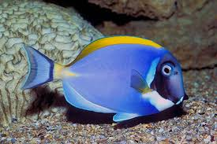
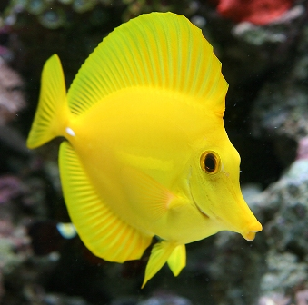
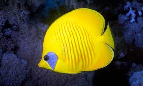

Pez Cirujano
Posee la morfología típica de su familia, cuerpo comprimido lateralmente y ovalado. La boca es pequeña, protráctil y situada en la parte inferior de la cabeza. El hocico es grande. Tiene 8 espinas y entre 23 a 33 radios blandos dorsales; 3 espinas y entre 22 y 29 radios blandos anales, y 16 radios blandos pectorales. Como todos los peces cirujano, de ahí les viene el nombre común, tiene una espina extraíble a cada lado de la aleta caudal; se supone que las usan para defenderse de otros peces. Su coloración de adulto es marrón grisáceo claro, con una banda oscura distintiva, desde la barbilla hasta el margen superior del opérculo branquial. La aleta caudal tiene un fino margen posterior blanco. Los juveniles tienen de 5 a 8 rayas verticales marrones atravesando el cuerpo, y, la aleta y el pedúnculo caudales, así como los radios blandos dorsales, son negros. Las aletas dorsal, anal y caudal de los juveniles tienen un fino margen blanco azulado. Algunos juveniles desarrollan una coloración similar a la del críptico pez ángel enano Centropyge eibli,5 en una estrategia de protección frente a posibles predadores.
Pez Cirujano Amarillo
El pez cirujano amarillo (Zebrasoma flavescens) es un pez cirujano, de la familia de los Acantúridos. Es uno de los peces marinos más populares, resistentes y solicitados en acuariofilia. Es un ágil y vistoso nadador. Sociable con la mayoría de habitantes del arrecife, a excepción de machos territoriales de su misma especie. Su forma es de punta de flecha, ya que su cuerpo está comprimido lateralmente, sus aletas dorsal y ventral son del mismo tamaño, y su boca es estrecha y prominente. Es de color amarillo limón luminoso y, como todos los peces cirujanos, tiene 2 espinas extraíbles a cada lado de la aleta caudal; se supone que las usan para defenderse de otros peces. Alcanza los 25 cm. de largo. Vive solitario, por parejas y en grupos sueltos en lagunas y a lo largo de arrecifes exteriores. Suele ubicarse en las partes sombreadas de los arrecifes, entre los 2 y 40 metros de profundidad. Se distribuye en el Océano Pacífico. Es nativo de Guam; Hawái; Japón; Islas Marshall; Micronesia; Islas Marianas; Palau; Filipinas y Taiwán. En la naturaleza se nutre principalmente de plancton, algas filamentosas y varias macroalgas. Su alimentación principal es herbívora. De tal modo que, en acuariofilia es una de las especies utilizadas para el control de algas por medios naturales
Pez Mariposa Amarillo
Forcipiger flavissimus, conocido como Pez mariposa amarillo de nariz larga, mariposa hocicona o Tipi-Tipi es una especie de pez mariposa de la familia Chaetodontidae. Es similar en apariencia al Forcipiger longirostris,que es menos común. En conjunto, las dos especies se conocen colectivamente en lengua hawaiana como lauwiliwilinukunukuʻoiʻoi, que significa "de nariz larga (en pico de punta)". Habitual en acuariofilia, es la segunda mayor exportación de Hawái. De cuerpo alto comprimido lateralmente. Su coloración es amarillo en el cuerpo, y tiene la mitad superior de la cabeza de color negro, la mitad inferior, la nariz y el vientre son nacarados. Las aletas son amarillas, y la cola, o aleta caudal, es blanca translúcida. También presenta un ocelo negro, situado en la parte superior de la aleta anal. Tiene una nariz prominente, aunque menor que la de su pariente F. longirostris. Tiene entre 12 y 13 espinas dorsales, entre 19 y 25 radios blandos dorsales, 3 espinas anales y entre 17 y 19 radios blandos anales.Alcanza los 22 cm de largo. 145 metros de profundidad, usualmente en parejas, aunque también solitario o en pequeños grupos Bentopelágicos. Se distribuye en el océano Indo-Pacífico, desde Mozambique, en la costa este africana, hasta las costas del Pacífico de centro y sur de América. Es especie nativa de Arabia Saudí; Australia; Bangladés; Birmania; Chile; Colombia; Comoros; Islas Cook; Costa Rica; Ecuador; El Salvador; Filipinas; Fiyi; Guam; Hawái; Honduras; India; Indonesia; Japón; Kenia; Kiribati; Madagascar; Malasia; Maldivas; Islas Marshall; Mauricio; Mayotte; México; Micronesia; Mozambique; Nauru; isla Navidad; Nicaragua; Nueva Caledonia; Niue; Islas Marianas del Norte; Palau; Papúa Nueva Guinea; Pitcairn;Polinesia; Reunión; Islas Salomón; Samoa; Seychelles; Singapur; Somalia; Sri Lanka; Sudáfrica; Taiwán; Tanzania; Tailandia; Tokelau; Tonga; Tuvalu; Vanuatu; Vietnam; Wallis y Futuna y Yibuti.
Pez Payaso

Amphiprioninae es una subfamilia de peces marinos de la familia Pomacentridae, que contiene únicamente los géneros Amphiprion y Premnas, cuyos componentes son conocidos como peces payaso o peces de las anémonas. Los peces payaso se caracterizan por sus contrastados e intensos colores, rojo, rosa, negro, amarillo, naranja o blanco. Proceden de los arrecifes de coral del Indo-Pacífico, y viven conjuntamente con las anémonas, teóricamente especies depredadoras, de las que obtienen una protección frente a posibles atacantes. A cambio, los peces payaso ofrecen la posibilidad de acercar alimento a la boca de la anémona, y, con su continuo movimiento, limpian el disco oral y los tentáculos de la anémona, evitándole infecciones bacterianas. Al tiempo, los ejemplares adultos de pez payaso defienden a sus anémonas hospedantes de peces depredadores especializados, como los peces mariposa de la familia Chaetodontidae. Fáciles de obtener, son peces de mantenimiento sencillo, por ello, todas sus variedades constituyen una buena opción para acuarios. Se trata de especies carnívoras, que necesitan un aporte vegetal en su dieta. En su medio natural, los peces payaso persiguen a sus pequeñas presas. Fáciles de obtener, son peces de mantenimiento sencillo, por ello, todas sus variedades constituyen una buena opción para acuarios. Se trata de especies carnívoras, que necesitan un aporte vegetal en su dieta. En su medio natural, los peces payaso persiguen a sus pequeñas presas. La coloración del cuerpo es variada, dependiendo de la especie, pudiendo ser el color base del cuerpo naranja brillante, o rojizo-marrón, o amarillo, o negro, o rosa-pardo. Estos colores, pueden estar atravesados con una, dos o tres franjas, según la especie, que cruzan verticalmente el cuerpo, dividiéndolo en porciones. Estas bandas suelen estar delimitadas con estrechos márgenes negros, y suelen ser blancas, aunque en algunas especies, como el Amphiprion chrysopterus, son azuladas. También hay alguna especie, como el Amphiprion perideraion, que tiene una línea blanca recorriendo su parte superior, desde la cabeza hasta la aleta caudal, y solo una franja estrecha vertical, entre la cabeza y las aletas pectorales. El Amphiprion sandaracinos posee también la línea blanca horizontal del lomo, pero se diferencia de A. perideraion en que la línea nace en el labio superior, y no entre los ojos, en que no posee la franja vertical de aquel, y en que su color base es naranja, siendo en A. perideraion naranja-rosáceo. Un Amphiprion ocellaris negro, en vez de naranja, con bandas de color blanco, se encuentra fuera del territorio norte de Australia. Tienen una aleta caudal redondeada y pueden crecer hasta 80 o 160 mm de longitud, según la especie. Las hembras son más grandes que los machos de esta subfamilia.